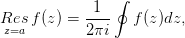
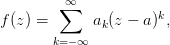
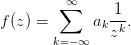

16.54 RESIDUE: A residue package
This package supports the calculation of residues of arbitrary expressions.
Author: Wolfram Koepf.
The residue Resz=af(z) of a function f(z) at the point a ∈ ℂ is defined
as

with integration along a closed curve around z = a with winding number
1.
If f(z) is given by a Laurent series development at z = a

then
If a = ∞, one defines on the other hand
for given Laurent representation

The package is loaded by the statement
1: load residue;
It contains two REDUCE operators:
- residue(f,z,a) determines the residue of f at the point z = a
if f is meromorphic at z = a. The calculation of residues at essential
singularities of f is not supported.
- poleorder(f,z,a) determines the pole order of f at the point
z = a if f is meromorphic at z = a.
Note that both functions use the taylor package in connection with
representations (16.94)–(16.95).
Here are some examples:
2: residue(x/(x^2-2),x,sqrt(2));
1
---
2
3: poleorder(x/(x^2-2),x,sqrt(2));
1
4: residue(sin(x)/(x^2-2),x,sqrt(2));
sqrt(2)*sin(sqrt(2))
----------------------
4
5: poleorder(sin(x)/(x^2-2),x,sqrt(2));
1
6: residue(1/(x-1)^m/(x-2)^2,x,2);
- m
7: poleorder(1/(x-1)/(x-2)^2,x,2);
2
8: residue(sin(x)/x^2,x,0);
1
9: poleorder(sin(x)/x^2,x,0);
1
10: residue((1+x^2)/(1-x^2),x,1);
-1
11: poleorder((1+x^2)/(1-x^2),x,1);
1
12: residue((1+x^2)/(1-x^2),x,-1);
1
13: poleorder((1+x^2)/(1-x^2),x,-1);
1
14: residue(tan(x),x,pi/2);
-1
15: poleorder(tan(x),x,pi/2);
1
16: residue((x^n-y^n)/(x-y),x,y);
0
17: poleorder((x^n-y^n)/(x-y),x,y);
0
18: residue((x^n-y^n)/(x-y)^2,x,y);
n
y *n
------
y
19: poleorder((x^n-y^n)/(x-y)^2,x,y);
1
20: residue(tan(x)/sec(x-pi/2)+1/cos(x),x,pi/2);
-2
21: poleorder(tan(x)/sec(x-pi/2)+1/cos(x),x,pi/2);
1
22: for k:=1:2 sum residue((a+b*x+c*x^2)/(d+e*x+f*x^2),x,
part(part(solve(d+e*x+f*x^2,x),k),2));
b*f - c*e
-----------
2
f
23: residue(x^3/sin(1/x)^2,x,infinity);
- 1
------
15
24: residue(x^3*sin(1/x)^2,x,infinity);
-1
Note that the residues of factorial and Γ function terms are not yet supported.